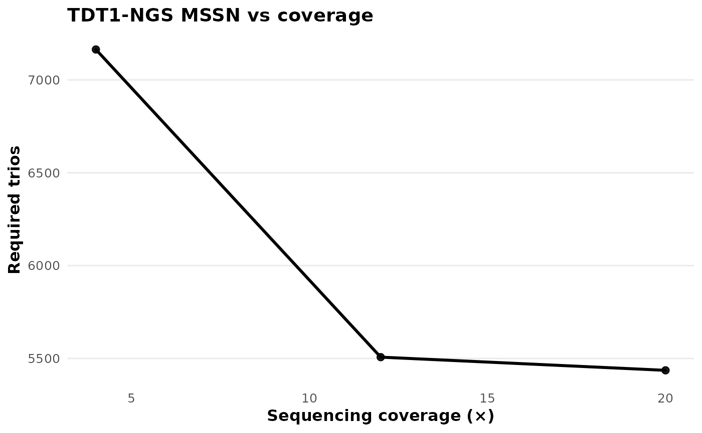

Plots analytic minimum sample size necessary (MSSN) against equal fixed sequencing coverage for either a case-control sequencing trend design or a TDT1-NGS design. Calculations delegate to the corresponding public MSSN API.
Usage
plot_ngs_mssn(
design = c("cc", "tdt"),
coverage,
seq_error,
return_data = FALSE,
...
)Arguments
- design
Either
"cc"forcc_ngs_mssn()or"tdt"fortdt_ngs_mssn().- coverage
Non-empty numeric vector of integer fixed sequencing depths. TDT1-NGS requires coverage of at least 2.
- seq_error
Non-empty numeric vector of symmetric per-read sequencing error probabilities in \([0,0.5)\). Multiple values produce separate curves.
- return_data
Logical. If
TRUE, return the exact plotting data rather than a ggplot object.- ...
Fixed arguments passed to
cc_ngs_mssn()ortdt_ngs_mssn(). For case-control designs,locus_het = TRUEpermits a vector ofpivalues. TDT1-NGS does not accept heterogeneity arguments.
Details
The primary case-control y-axis is required cases; returned plot data also retain required controls, total MSSN, and achieved power. The primary TDT1-NGS y-axis is required complete trios; returned data also retain total individuals and achieved power.
At the case-control exact-null boundary pi = 0, no finite MSSN exists
when requested power exceeds alpha. The row is retained with MSSN and
achieved power set to NA, finite_mssn = FALSE, and status
"no finite MSSN". No artificial finite value is plotted. Only this
expected scientific condition is converted; invalid inputs and unexpected
calculation errors propagate unchanged.
Coverage is fixed and equal for the relevant study members. These plots do not model variable/BGE coverage distributions, cost optimization, or sample-specific depth. They use no simulation. Locus heterogeneity is currently available only for case-control designs.
Examples
plot_ngs_mssn(
design = "tdt", coverage = c(4, 12, 20), seq_error = 0.005,
power = 0.80, pd = 0.325, R1 = 1.2, alpha = 5e-8,
verbose = FALSE
)
#> Ignoring unknown labels:
#> • colour : "Design"
#> • linetype : "Design"
